Test Power + Driveline Combinations
This simple script tests a number of powertrain configurations. The wide-open throttle and braking test shows which axles are powered as those wheel speeds will be faster.
Contents
load_system('sm_car') sm_car_load_vehicle_data('sm_car_Axle3','191'); set_param('sm_car/Controller','popup_control','Default');
Loading default data for 2-axle vehicle and 1-axle trailer. Turning off MFEval warnings... Solver:CoeffChecks:Eyk -- OFF Solver:Limits:Exceeded -- OFF Solver:CoeffChecks:Et -- OFF Solver:CoeffChecks:Exa -- OFF Disabling trailer by default.
A1 Ideal
Vehicle = sm_car_vehcfg_setPower(Vehicle,'Ideal_A1_default'); Vehicle = sm_car_vehcfg_setPowerCooling(Vehicle,'None'); Vehicle = sm_car_vehcfg_setDrv(Vehicle,'A2_D1_1D_HA'); open_system('sm_car/Vehicle/Vehicle/Powertrain','force') sim('sm_car') sm_car_plot2whlspeed
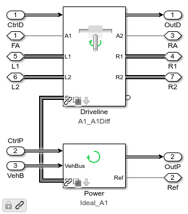
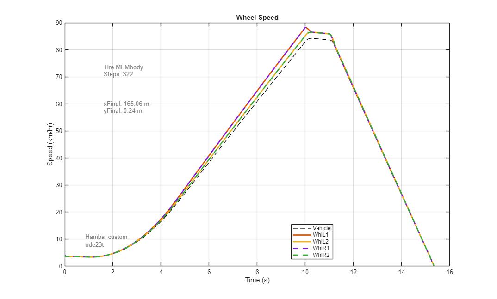
% Close system so screenshot will capture it in when publishing close_system('sm_car/Vehicle/Vehicle/Powertrain')
L1 R1 Ideal
Vehicle = sm_car_vehcfg_setPower(Vehicle,'Ideal_L1_R1_default'); Vehicle = sm_car_vehcfg_setPowerCooling(Vehicle,'None'); Vehicle = sm_car_vehcfg_setDrv(Vehicle,'A2_S1_1D_HA'); open_system('sm_car/Vehicle/Vehicle/Powertrain','force') sim('sm_car') sm_car_plot2whlspeed
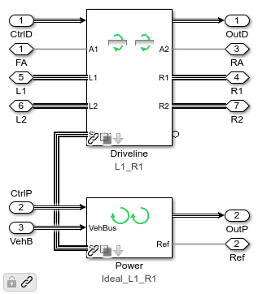
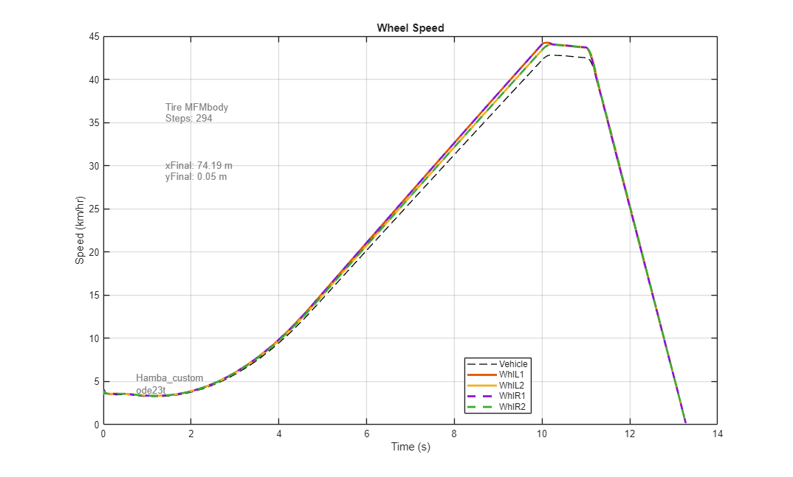
% Close system so screenshot will capture it in when publishing close_system('sm_car/Vehicle/Vehicle/Powertrain')
A2 Ideal
Vehicle = sm_car_vehcfg_setPower(Vehicle,'Ideal_A2_default'); Vehicle = sm_car_vehcfg_setPowerCooling(Vehicle,'None'); Vehicle = sm_car_vehcfg_setDrv(Vehicle,'A2_D2_1D_HA'); open_system('sm_car/Vehicle/Vehicle/Powertrain','force') sim('sm_car') sm_car_plot2whlspeed
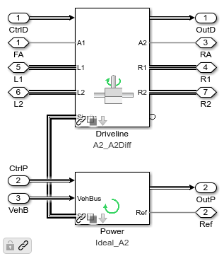
close_system('sm_car/Vehicle/Vehicle/Powertrain')
L2 R2 Ideal
Vehicle = sm_car_vehcfg_setPower(Vehicle,'Ideal_L2_R2_default'); Vehicle = sm_car_vehcfg_setPowerCooling(Vehicle,'None'); Vehicle = sm_car_vehcfg_setDrv(Vehicle,'A2_S2_1D_HA'); open_system('sm_car/Vehicle/Vehicle/Powertrain','force') sim('sm_car') sm_car_plot2whlspeed
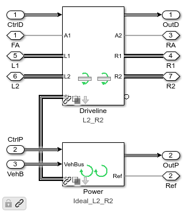
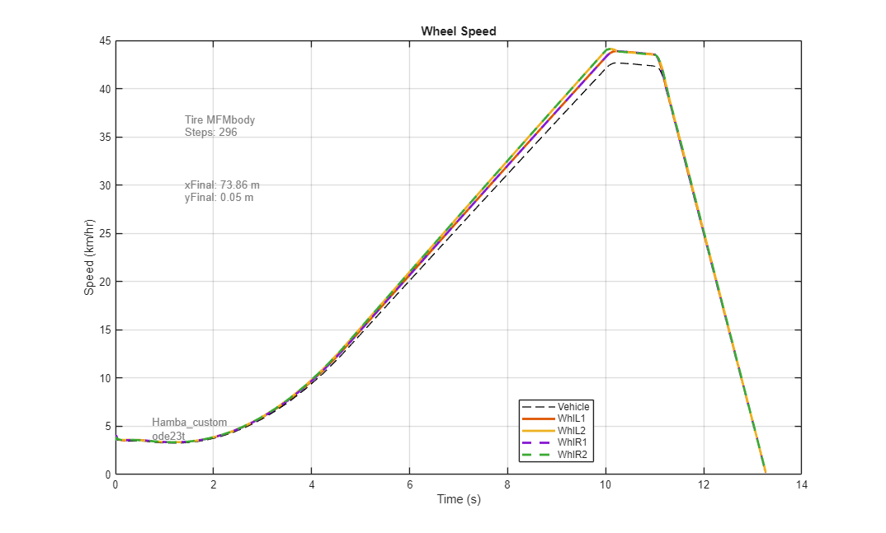
% Close system so screenshot will capture it in when publishing close_system('sm_car/Vehicle/Vehicle/Powertrain')
A1 A2 Ideal
Vehicle = sm_car_vehcfg_setPower(Vehicle,'Ideal_A1_A2_default'); Vehicle = sm_car_vehcfg_setPowerCooling(Vehicle,'None'); Vehicle = sm_car_vehcfg_setDrv(Vehicle,'A2_D1D2_1D_1D_HA'); open_system('sm_car/Vehicle/Vehicle/Powertrain','force') sim('sm_car') sm_car_plot2whlspeed
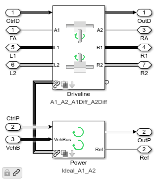
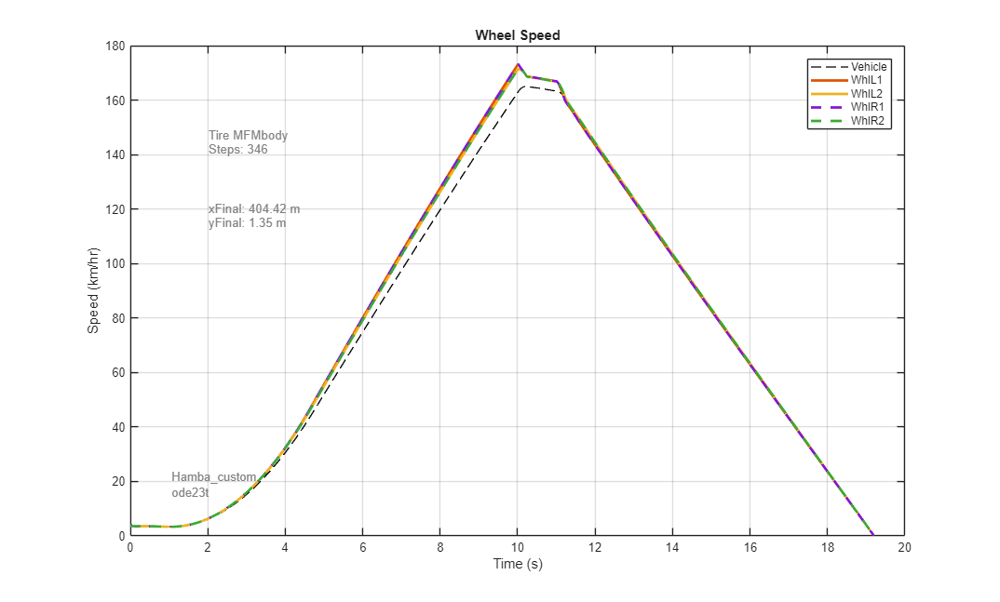
% Close system so screenshot will capture it in when publishing close_system('sm_car/Vehicle/Vehicle/Powertrain')
A1 L2 R2 Ideal
Vehicle = sm_car_vehcfg_setPower(Vehicle,'Ideal_A1_L2_R2_default'); Vehicle = sm_car_vehcfg_setPowerCooling(Vehicle,'None'); Vehicle = sm_car_vehcfg_setDrv(Vehicle,'A2_D1S2_1D_1D_HA'); open_system('sm_car/Vehicle/Vehicle/Powertrain','force') sim('sm_car') sm_car_plot2whlspeed
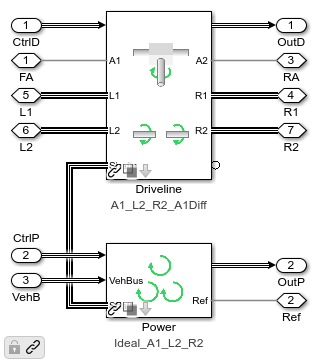
% Close system so screenshot will capture it in when publishing close_system('sm_car/Vehicle/Vehicle/Powertrain')
L1 R1 L2 R2 Ideal
Vehicle = sm_car_vehcfg_setPower(Vehicle,'Ideal_L1_R1_L2_R2_default'); Vehicle = sm_car_vehcfg_setPowerCooling(Vehicle,'None'); Vehicle = sm_car_vehcfg_setDrv(Vehicle,'A2_S1S2_1D_1D_HA'); open_system('sm_car/Vehicle/Vehicle/Powertrain','force') sim('sm_car') sm_car_plot2whlspeed
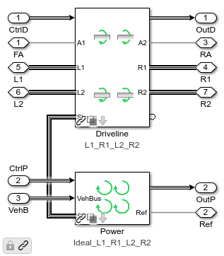
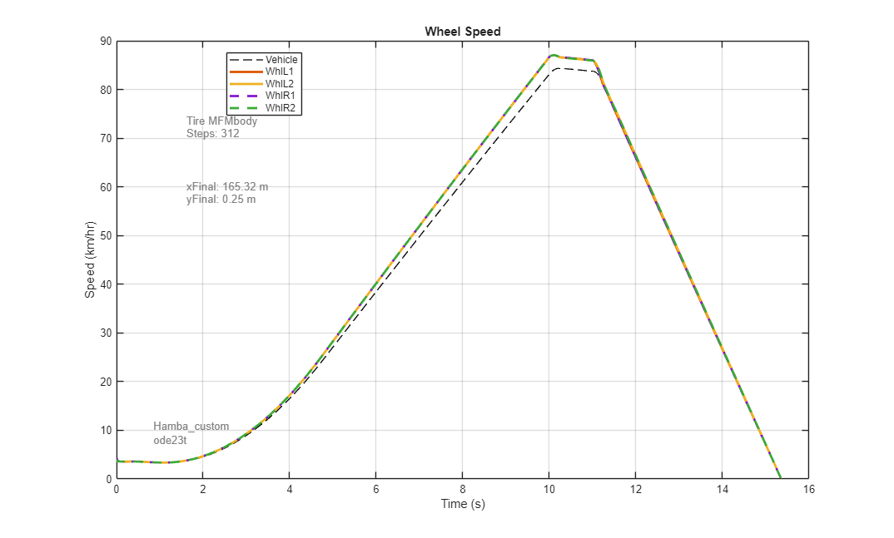
% Close system so screenshot will capture it in when publishing close_system('sm_car/Vehicle/Vehicle/Powertrain')
A1 Electric
Vehicle = sm_car_vehcfg_setPower(Vehicle,'Electric_A1_default'); Vehicle = sm_car_vehcfg_setPowerCooling(Vehicle,'None'); Vehicle = sm_car_vehcfg_setDrv(Vehicle,'A2_D1_1D_HA'); open_system('sm_car/Vehicle/Vehicle/Powertrain','force') sim('sm_car') sm_car_plot2whlspeed
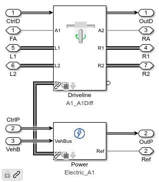
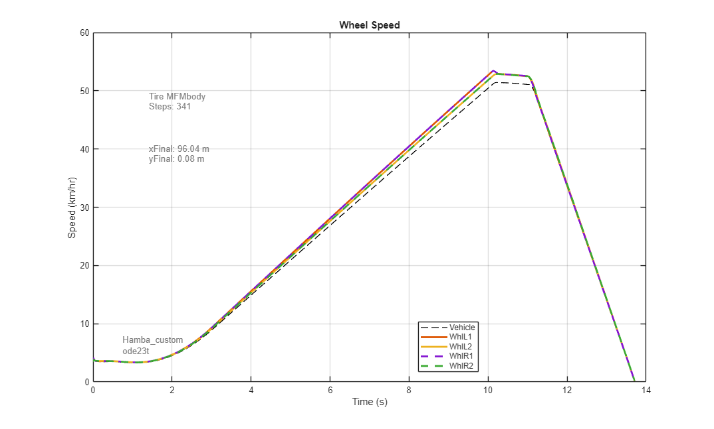
% Close system so screenshot will capture it in when publishing close_system('sm_car/Vehicle/Vehicle/Powertrain')
L1 R1 Electric
Vehicle = sm_car_vehcfg_setPower(Vehicle,'Electric_L1_R1_default'); Vehicle = sm_car_vehcfg_setPowerCooling(Vehicle,'None'); Vehicle = sm_car_vehcfg_setDrv(Vehicle,'A2_S1_1D_HA'); open_system('sm_car/Vehicle/Vehicle/Powertrain','force') sim('sm_car') sm_car_plot2whlspeed
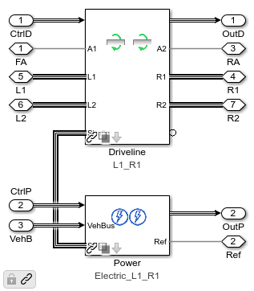
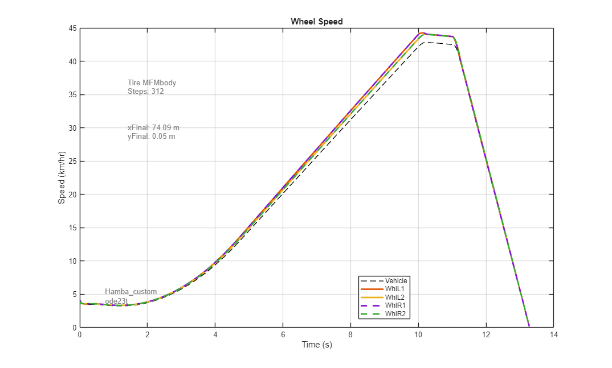
close_system('sm_car/Vehicle/Vehicle/Powertrain')
A2 Electric
Vehicle = sm_car_vehcfg_setPower(Vehicle,'Electric_A2_default'); Vehicle = sm_car_vehcfg_setPowerCooling(Vehicle,'None'); Vehicle = sm_car_vehcfg_setDrv(Vehicle,'A2_D2_1D_HA'); open_system('sm_car/Vehicle/Vehicle/Powertrain','force') sim('sm_car') sm_car_plot2whlspeed
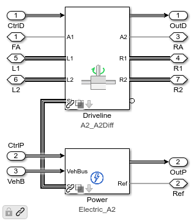
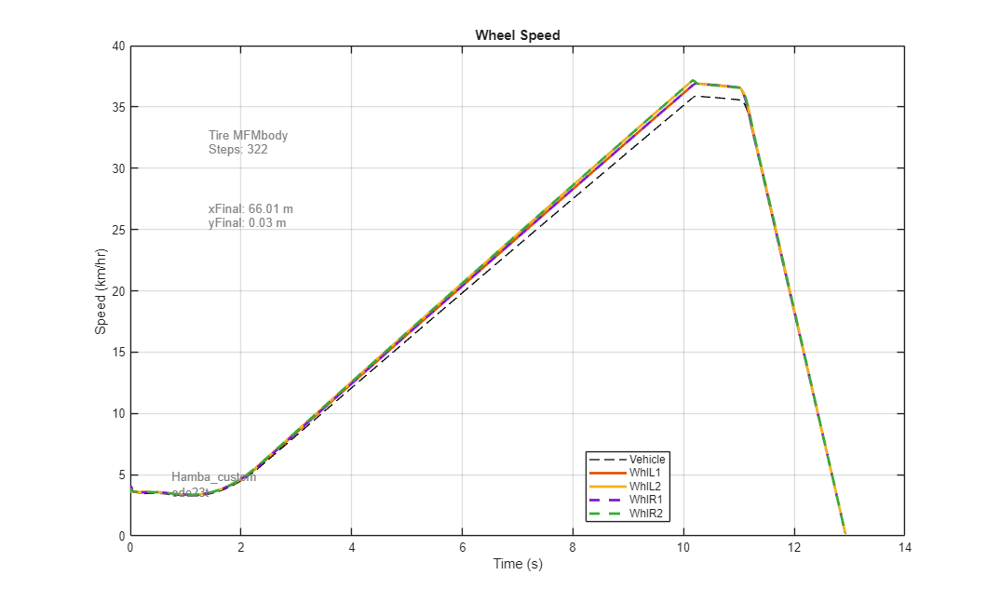
% Close system so screenshot will capture it in when publishing close_system('sm_car/Vehicle/Vehicle/Powertrain')
L2 R2 Electric
Vehicle = sm_car_vehcfg_setPower(Vehicle,'Electric_L2_R2_default'); Vehicle = sm_car_vehcfg_setPowerCooling(Vehicle,'None'); Vehicle = sm_car_vehcfg_setDrv(Vehicle,'A2_S2_1D_HA'); open_system('sm_car/Vehicle/Vehicle/Powertrain','force') sim('sm_car') sm_car_plot2whlspeed
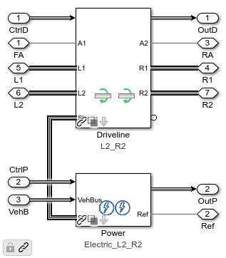
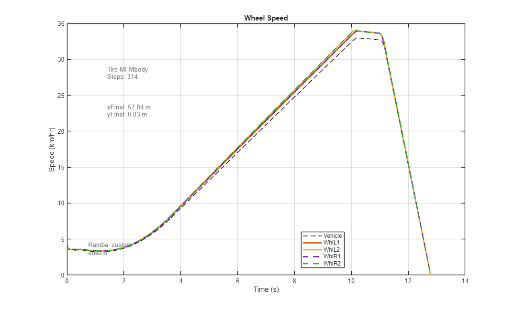
% Close system so screenshot will capture it in when publishing close_system('sm_car/Vehicle/Vehicle/Powertrain')
A1 L2 R2 Electric
Vehicle = sm_car_vehcfg_setPower(Vehicle,'Electric_A1_L2_R2_default'); Vehicle = sm_car_vehcfg_setPowerCooling(Vehicle,'None'); Vehicle = sm_car_vehcfg_setDrv(Vehicle,'A2_D1S2_1D_1D_HA'); open_system('sm_car/Vehicle/Vehicle/Powertrain','force') sim('sm_car') sm_car_plot2whlspeed
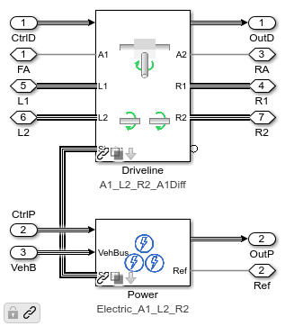
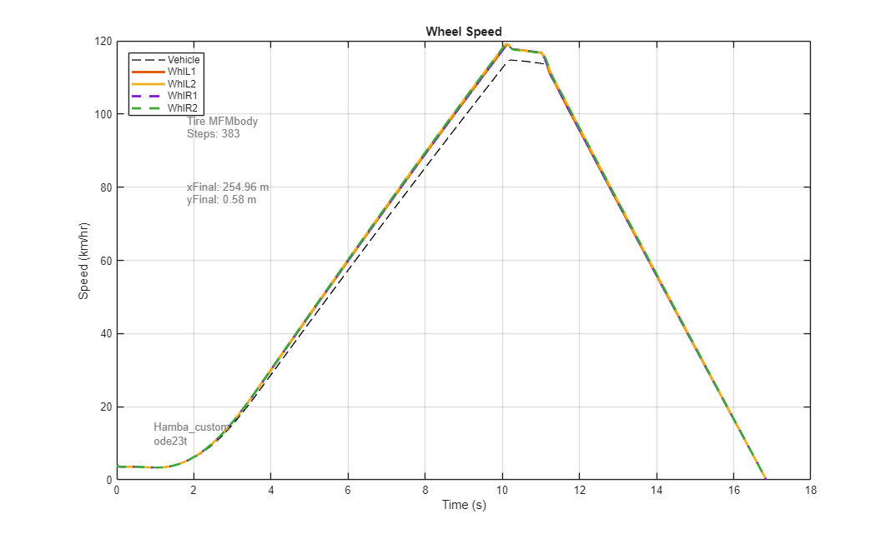
close_system('sm_car/Vehicle/Vehicle/Powertrain')
L1 R1 L2 R2 Electric
Vehicle = sm_car_vehcfg_setPower(Vehicle,'Electric_L1_R1_L2_R2_default'); Vehicle = sm_car_vehcfg_setPowerCooling(Vehicle,'None'); Vehicle = sm_car_vehcfg_setDrv(Vehicle,'A2_S1S2_1D_1D_HA'); open_system('sm_car/Vehicle/Vehicle/Powertrain','force') sim('sm_car') sm_car_plot2whlspeed
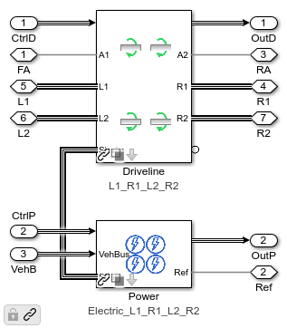
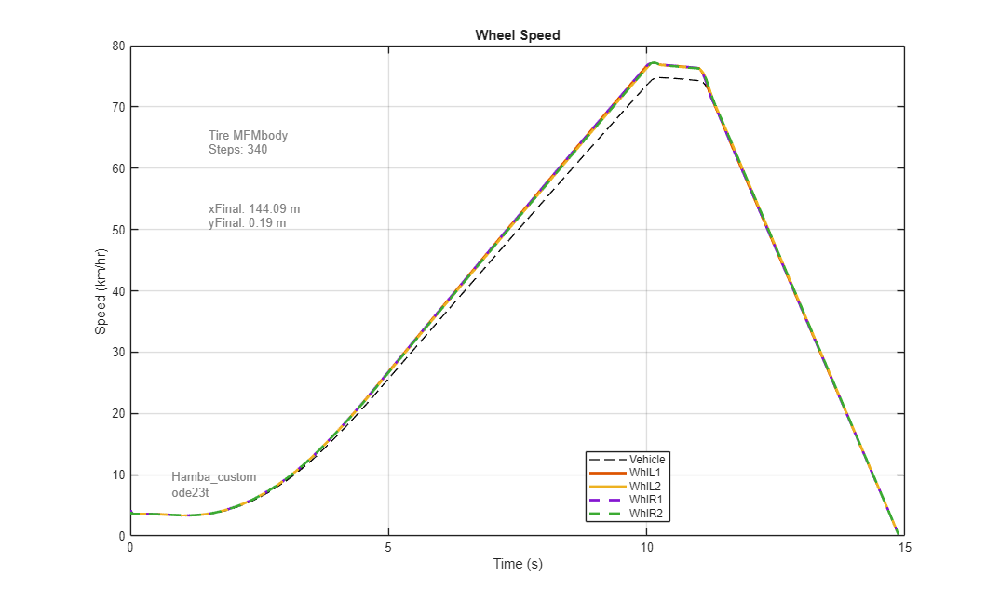
% Close system so screenshot will capture it in when publishing close_system('sm_car/Vehicle/Vehicle/Powertrain')
None
Vehicle = sm_car_vehcfg_setPower(Vehicle,'None'); Vehicle = sm_car_vehcfg_setPowerCooling(Vehicle,'None'); Vehicle = sm_car_vehcfg_setDrv(Vehicle,'A2_S1S2_1D_1D_HA'); open_system('sm_car/Vehicle/Vehicle/Powertrain','force') set_param('sm_car','SimulationCommand','update')
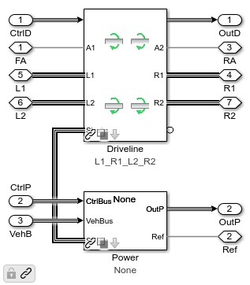
bdclose all close all